(1) - 副本.jpg)
1.姓名：赵含旭
2.出生年月：2004.10.8
3.年龄：20
4.星座：天秤
5.民族：蒙古族
6.籍贯：内蒙古呼和浩特市
7.手机号：18347964777
8.邮箱：3145131436@qq.com
9.学号：5320236228
篮球是我为数不多的爱好之一，从十三岁打球到现在也有七年有余，随着年龄的增长，身体的发育，我接触了不同级别的比赛，高中时因为学习问题迟迟没有加入校队，这也是我的遗憾之一。
很多进入校队的人不是很愿意训练，我这样的爱好者却一直坚持，后面参加了许多呼和浩特市体育局和当地球馆办的比赛，基本都是冠亚军。还在当地成立了一个人数基本固定在八人的小球队，在安踏有活动的时候，也是第一时间去配合参加。
大家都喜欢看小球时代：库里的时候，我却在看拉里伯德、罗德曼、乔丹、微笑刺客托马斯、魔术师约翰逊、再到后面的白巧，这些都是我所崇拜的球星。高中时期球队里的朋友都喊我“罗斯”。
在高三毕业之后的一场训练，抢篮板的过程中踩到了别人的脚上，导致我左脚脱臼，三角韧带撕裂，距腓前韧带撕裂，基本告别了篮球这项运动，现在只能打一些低强度的比赛。
既然不能在场上奔跑，就选择能继续站在球场上的方式，于是我报了国家三级裁判员，并顺利通过了考试。
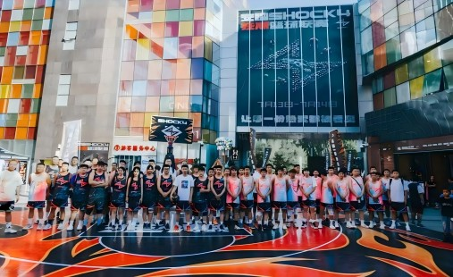
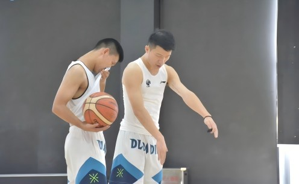
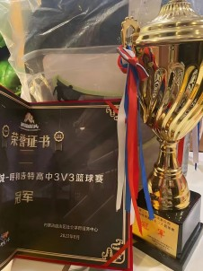
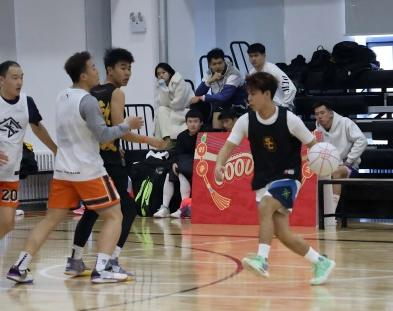
平时还喜欢摄影，习惯记录下生活中每一个美的瞬间，虽然是用手机拍照，但在构图和调色上也下足了功夫。
尽管脚受伤了，可是我仍然有着一股对于体育运动的热爱，所以我开始磨练我的意志，强壮我的体魄，慢慢地爱上健身。
我始终保持着对新鲜事物的好奇与憧憬，尝试了滑雪，希望未来还能继续尝试更多的运动，包括：潜水，跳伞，蹦极等。生命不息，运动不止！
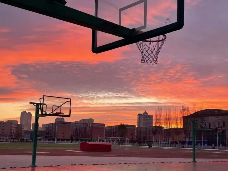
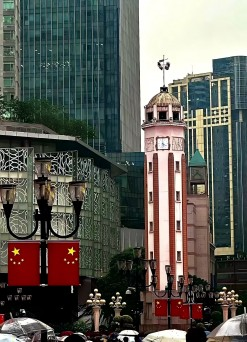
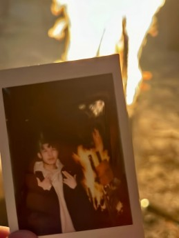
生活除了学术，运动，还必须要有娱乐的方式，休闲的时候比较喜欢打打游戏或者和朋友去咖啡厅喝咖啡，去图书馆看心理学类型的书，去出片的地方拍照，看一些美剧，顺便训练一下我的听力和口语。
同时我也喜欢微醺，因为会有灵感，正如李白的诗大多都出自于酒后，对于我来讲是一种很好的解压方式。
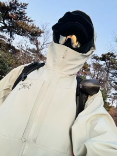
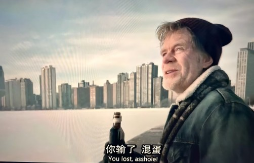
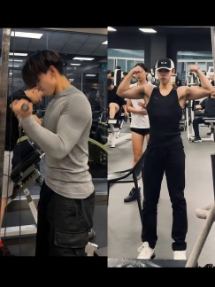
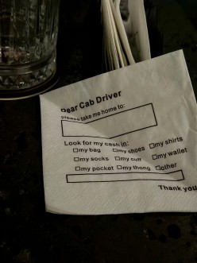
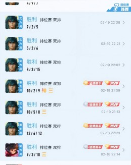
最近除申请学校和雅思刷分外，迷恋上了《水浒传》初中时必读的四大名著之一，在这一刻，教育完成了闭环。其中我对鲁智深很感兴趣，有一句很反直觉却极具佛性的一段话：努力并不是为了成功，其实恰恰是为了失败。
这是他在悟道之后所说的“钱塘江上潮信来，今日方知我是我，”鲁智深的一生：在打架方面是从来没有失败过的，直到有一天中秋夜，他在六合寺突然听到了外面有战马嘶鸣的声音，于是他抄起禅杖就准备出去抓人，结果发现自己根本没有敌人，他以为战鼓隆隆的声音其实只是潮水翻滚的声音。他没有战胜钱塘江的涨潮，这也是他一生中唯一的敌人。所以不管他战胜多少敌人，都无法去忤逆这种自然法则的恒定性。也就是在他发现这点之后，并没有失望，而是大彻大悟，选择圆寂。
正是因为他的失败，让他触摸到了自己的极限在哪里，也让他完成了对自我的认知。但是很多时候，我们一生都无法经历一次抵达极限的失败。我们的努力不一定都是真正的努力，而是一步三回头的努力，以结果为导向。就像登山，攀登为了登顶，过程中就会很焦虑。如果只是为了体验攀登本身的话，反而能更轻松的抵达山顶。人的潜力都是在这样的状态下迸发出来的，有人会想：万一失败了怎么办，答案是，当一个人如此这般努力还失败时，这并不是真正意义上的失败，而是“证道”，是触摸到了极限在哪里，这个时候就可以坦然地放下执念。所以努力达到极致的时候，努力和成功带来的效果是一模一样的。努力，很多时候是为了证明自己做不成这件事情，从而放下执念。
©版权所有 3145131436@qq.com